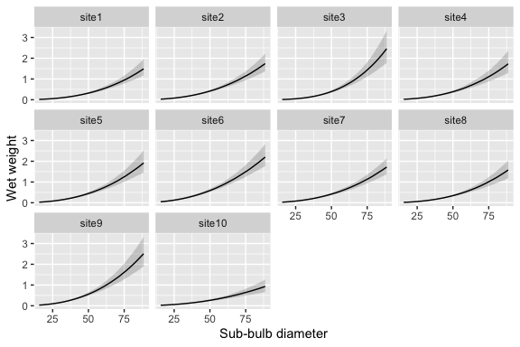

kelpbio fits Bayesian hierarchical models to estimate kelp biomass and carbon from field measurements.
Installation
Install the pre-built binary from the Hakai R-universe (macOS and Windows):
install.packages(
"kelpbio",
repos = c("https://hakaiinstitute.r-universe.dev", getOption("repos"))
)Install from source (Linux, or to build from GitHub):
# install.packages("pak")
pak::pak("HakaiInstitute/kelpbio")Source builds require a C++ toolchain:
- Linux:
sudo apt install build-essential - Windows: Rtools
- macOS:
xcode-select --install
Usage
kelpbio fits each biomass component with its own kb_fit_*() function. The allometric weight model relates wet weight to sub-bulb diameter, with random effects for site and site-by-year.
The model is fitted to a data frame of diameter, weight, site, and year. A small simulated dataset is included with the package:
library(kelpbio)
head(data_weight_sim_nereo)
#> # A tibble: 6 × 4
#> diameter weight site year
#> <dbl> <dbl> <fct> <fct>
#> 1 53.8 0.412 site1 2019
#> 2 38.2 0.183 site1 2019
#> 3 25.2 0.059 site1 2019
#> 4 54.5 0.523 site1 2019
#> 5 25.6 0.06 site1 2019
#> 6 49.5 0.411 site1 2019Fit the model with kb_fit_weight_nereo():
fit <- kb_fit_weight_nereo(data_weight_sim_nereo, seed = 1)Fitting compiles and samples the Stan model, so a pre-fit model on this dataset is included with the package for quick exploration:
fit <- fit_weight_sim_nereoCheck convergence with glance() and summarise the model terms with tidy():
glance(fit)
#> # A tibble: 1 × 8
#> n K nchains niters nthin ess rhat converged
#> <int> <int> <int> <dbl> <int> <dbl> <dbl> <lgl>
#> 1 234 10 2 400 1 201. 1.03 TRUE
tidy(fit)
#> # A tibble: 7 × 4
#> term estimate lower upper
#> <chr> <dbl> <dbl> <dbl>
#> 1 bWeight -1.47 -1.66 -1.24
#> 2 bDiameter 2.5 2.28 2.74
#> 3 bDiameter2 0.0749 -0.156 0.313
#> 4 sSite 0.27 0.176 0.459
#> 5 sSiteDiameter 0.313 0.169 0.62
#> 6 sSiteYear 0.0962 0.0521 0.149
#> 7 sWeight 0.161 0.141 0.185Predict the weight-diameter curve for each site with kb_predict_weight_by() and plot it with kb_plot_predictions():
kb_predict_weight_by(fit, by = "site") |>
kb_plot_predictions()
Predict weight at new diameters with kb_predict_weight(). It returns a table with a point estimate and conf_level compatibility limits for each row:
new_data <- data.frame(diameter = c(20, 35, 50, 65, 80), site = "site1")
set.seed(1)
kb_predict_weight(fit, new_data)
#> <kb_predictions> predictor: diameter | response: weight | by: site
#> # A tibble: 5 × 5
#> diameter site estimate lower upper
#> <dbl> <chr> <dbl> <dbl> <dbl>
#> 1 20 site1 0.0302 0.0229 0.0393
#> 2 35 site1 0.126 0.0975 0.162
#> 3 50 site1 0.319 0.242 0.421
#> 4 65 site1 0.647 0.49 0.85
#> 5 80 site1 1.12 0.842 1.52The fitted object exposes the standard rstantools generics (posterior_predict(), log_lik(), and others), so it composes directly with bayesplot and loo.
Citation
If you use kelpbio in your work, please cite it. Use citation() to get a formatted citation and BibTeX entry:
citation("kelpbio")
#> To cite kelpbio in publications use:
#>
#> Dalgarno S (2026). _kelpbio: Bayesian Kelp Biomass Estimation_. R
#> package version 0.0.0.9000,
#> <https://github.com/HakaiInstitute/kelpbio>.
#>
#> A BibTeX entry for LaTeX users is
#>
#> @Manual{,
#> title = {kelpbio: Bayesian Kelp Biomass Estimation},
#> author = {Seb Dalgarno},
#> year = {2026},
#> note = {R package version 0.0.0.9000},
#> url = {https://github.com/HakaiInstitute/kelpbio},
#> }